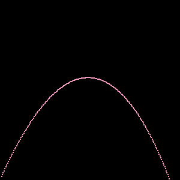

"En strålesporingsutfording".
Dette er en øvelse i minimalisme. Og tålmodighet. Og nøyaktighet. Jeg er vant til å ha full tilgang til Internett, til nedlasting av programvare; utallige artikler og videoer om alle tenkelige emner, rik programvare med tusenvis av hjelpemidler som gjør mye av jobben for meg. Jeg skal utdype disse begrensningene og hva jeg gjør for å komme rundt dem.
Utfordringen kommer i form av en bok, "The Ray Tracer Challenge" av Jamis Buck, utgitt 2019 på The Pragmatic Programmers. Denne boken tar leseren gjennom alle stegene for å lage en "3D Renderer", en programvare som lager bilder av 3D-modeller, ved beregne hvordan lys reflekteres og brytes når det treffer de ulike 3D objektene som utgjør modellen. Dette skal man lage selv – boken har ingen ferdig kode, kun "pseudokode" som beskriver omtrentlig hva de ulike funksjonene skal gjøre, og så er det opp til leseren å implementere dette i sitt valgte programmeringsspråk. I tillegg er fremgangsmåten TDD (Test-Driven Development), som jeg skal redegjøre for lenger ned i dette dokumentet.
Gitt begrensningene har jeg kun funnet èn mulig tilnærming til denne utfordringen, og det er med HTML, CSS og JS i nettleser. Ingen webserver, ingen API, ingenting annet enn lokale filer som kjører i Google Chrome.
Jeg har tilgang til nettsiden w3schools.com hvor de har en begrenset kode-editor som jeg vil bruke til å teste noe av koden.
I tillegg til referansene hos w3schools.com har jeg tilgang til stackoverflow.com som gir svar på det meste jeg kan tenkes å lure på.
DFS er et ekstra nedlåst Citrix-miljø. Det er ingen tilgang til å installere egen programvare, så jeg kan ikke bruke noen biblioteker. Det er ingen tilgang til Chrome’s Developer Mode eller konsoll-logg, så jeg får ikke se en eneste feilmelding. Det er heller ingen kommandolinje eller versjonskontroll (git), så jeg må huske å ta manuelle daterte kopier med jevne mellomrom. "Kode-editoren" er notepad, med noe bedre funksjonalitet i w3schools nettbaserte editor, men der kan jeg ikke referere eksterne filer, så alt må legges inn i samme vindu.
Filstrukturen som etter hvert har dukket opp er en rot-katalog (/html) som inneholder alle html-filer, og underkataloger for js-filer (/js) og etter hvert for css (/css). I tillegg ligger dette dokumentet under en dokumentasjonskatalog (/docs), der jeg også vil lagre skjermbilder etc. Strukturen blir til mens vi går.
Backup tas ved å kopiere hele /html strukturen til et eget område (/Backup/ÅÅÅÅMMDD/) for hver dag. Dette er på ingen måte sammenlignbart med versjonskontroll, men der det beste jeg kan komme på.
Boken baserer seg som nevnt på TDD, som jeg lenge har hatt lyst til å praktisere. Metoden er som følger:
Først lager jeg en test som kjører denne ikke-eksisterende funksjonen, gir den to kjente tall u og v og sjekker hva funksjonen svarer, mot det forventede resultat som jeg har sjekket på kalkulatoren min √52 + 32 = 5,830951895 og returnerer true eller false avhengig av resultatet av testen:
function test_hypotenuse_function() {
var u = 5
var v = 3
return (hypotenuse(u, v) == 5.830951895)
}
Siden funksjonen ikke finnes, vil testen feile. Så lager jeg funksjonen, men uten å gjøre den ferdig:
function hypotenuse(a, b) {
return 0
}
Kjører testen på nytt, den feiler igjen. Jeg implementerer funksjonen ferdig:
function hypotenuse(a, b) {
return Math.sqrt(a**2 + b**2)
}
Og kjører testen igjen. Denne gang skal den vel returnere true? Eller?
Det er her elegansen i test-drevet utvikling kommer til syne: På grunn av forskjell i "flyt-talls-presisjonen" mellom JS og min kalkulator vil testen fortsatt feile. JS gir svaret 5.830951894845301. En test som feiler betyr at "noe" er galt, og vi må se nærmere på årsaken. Hvis jeg nå endrer testen så den istedet sammenligner resultatet av funksjonen mot det mer nøyaktige √34, så passerer testen som den skal.
Dette kan ved første øyekast virke tungrodd og masse ekstra kode for å teste EN kodelinje; hva er vitsen med å sammenligne 1 == 1??? Når kompleksiteten øker og man begynner å kjøre tester på større operasjoner, vil testene kunne avdekke slike subtile feil som avrunding etc. Feil som ellers kunne gått ubemerket hen i lang tid og dukket opp i form av obskure problemer helt andre steder i koden.
Når jeg senere gjør endringer i eksisterende kode (feks refaktorerer eller legger til / trekker fra funksjonalitet) som får tester til å feile som tidligere har fungert fint, blir feilene oppdaget tidlig og kan fikses mens man har endringen friskt i minne. Verdien av test-drevet utvikling øker eksponensielt med antall utviklere som jobber i og endrer kodebasen. Grundige tester fungerer som et sikkerhetsnett.
13.04.2024: Finner en funksjon som kan vise feilkoder i HTML her… 😀
Jeg starter i begynnelsen av April 2024 med dette prosjektet. Jeg leser noen kapitler og tester litt miljøet jeg kan programmere i. Det er ikke vits å starte på noe dersom jeg for eksempel ikke kan kjøre JS i eksterne filer, eller ikke kan bruke HTML canvas elementet. Heldigvis ser det ikke ut til at det ikke er restriksjoner her.
Rammeverket for testing blir sakte til mens jeg går. Jeg starter med manipulering av "hardkodede" HTML-elementer, men kommer fort på bedre tanker og lar hver test kjøre som en egen funksjon runTest() som både kjører testen og viser navnet på test-funksjonen og resultatet av testen i rød eller grønn tekst. Foreløpig holder dette.
test_runner.html laster JS-skriptene js/functions.js og js/tests.js som inneholder hhv funksjonene som skal testes og testene som benyttes.
Det første kapitlet handler om de mest grunnleggende byggesteinene i dette systemet. En tuple er en datatype med x, y og z koordinater, samt en verdi w som forteller om dette er en vektor (w=0) eller et punkt (w=1). I første implementasjon er en vektor bare en tuple med w=0 og et punkt er bare en tuple med w=1. Det er ingen restriksjoner mellom de ulike datatypene. Dette kan det bli nødvendig å endre senere, men inntil videre er distinksjonen kun for egen klarhet.
Jeg lager en funksjon equal(a, b) for å sammenligne to flyttall med "slingringsmonn", siden man ellers vil få problemer grunnet avrunding. Dette er et generelt problem i programmering, siden flyttall ikke kan gjengis helt nøyaktig. Denne brukes også i funksjonen equal_tuples() som sammenligner om to tupler er like.
Videre oppretter jeg en konstant PRECISION = 5 som brukes til å angi presisjonen i avrundingsoperasjoner med .toFixed(PRECISION) der det blir nødvendig i koden, og til å angi konstanten EPSILON = 1.0*10**(-PRECISION) som er sammenligningsverdien som brukes i equal()-funksjonen. Dersom a - b > EPSILON er tallene ansett som like. Når PRECISION = 5 er EPSILON = 1*10-5. Dette må jeg sannsynligvis justere senere, dersom det skaper problemer.
Funksjoner for å legge samme og trekke vektorer fra hverandre er neste. Her kommer w-verdien til sin rett, for hvis man legger sammen et punkt (w=1) og en vektor (w=0) får man et nytt punkt (w=1). Og dersom man legger sammen to punkt får man w=2, som ikke er verken punkt eller vektor. Dersom man legger samme to vektorer får man fortsatt w=0, som er en ny vektor. Helt riktig! 😁
13.04.2024: Jeg jobber med å legge sammen og trekke fra tupler, og så sammenligne resultatene etterpå. Dette må fungere bra, ellers blir det trøbbel down the line. Men det er ikke så enkelt! 😅
På et tidspunkt virker det som attests.jsikke lenger blir importert – funksjonentest_tuple_function()er ikke definert. Men i Tryit editor fungerer det (tilsynelatende). Her blir det en del feilsøking før jeg lærer to viktige ting: a) en JS-fil med feil i, blir ikke lastet inn, og b) JS-variabler kan ikke ha bindestrek (–) i navnet.
Jeg fortsetter å implementere tuple-funksjoner og –tester til jeg er gjennom kapittel 1. På slutten av kapitlet er det en liten øvelse for å teste ting, der man skal lage en virtuell "kanon", og skyte prosjektiler. Prosjektilet har en posisjon og en hastighetsvektor. Miljøet har gravitasjon (vektor) og vind (vektor) som skal regnes med.
Her går jeg for første gang på en Out Of Memory krasj, på grunn av en evig loop. Jeg får funksjonen til å regne posisjoner helt fint, og lagrer forsøket i ./projectile.html.
Her starter vi med litt farge-teori, og noterer at fargenes r,g,b verdier til forveksling ligner på tuples! 🤩 Jeg ser at boka vil at vi skal lage PPM filer, som er et tekstbasert grafikk-format. De anbefaler at man bruker GIMP til å se disse på Windows, og jeg får sjekket at GIMP er installert på maskinen. Yey!
Jeg starter kodingen med å implementere (test av , og) color(r, g, b) datatypen, og funksjoner for å legge sammen og multiplisere farge med skalarverdi og to farger med hverandre.
Deretter en metode som lager et spesifisert canvas-objekt og tester at det blir laget korrekt, og deretter skrive en fargeverdi til en spesifisert pixel og lese den ut.
Jeg undersøker hvilke metoder vi har tilgjengelig; kan jeg for eksempel lese ut width og height fra det canvas-elementet jeg nettopp har laget? Finner ikke ut av det, og nøyer meg med å teste at det finnes et element med spesifisert id. (Senere ser jeg at canvas-elementet HAR disse verdiene, men jeg prøvde å finne dem på tilhørende context-objekt.
For å skrive til canvas, henter man ut konteksten med canvas.getContext(2d) og skriver til den. (Ja, det skal være 2d, for raytraceren skal bare kalkulere fargeverdier på pixler.)
Kan jeg så lese ut fargeverdien til en gitt pixel? Ja, med getImageData().
fillrect(x, y, w, h) skriver et rektangel på posisjon (x, y) og størrelse (w, h).
Dette fungerer. Canvasen ser slik ut:
Dette canvas opplegget ble bare tull. Jeg finner ut at det slett ikke er nødvendig med noen HTML-canvas. I boka er canvas bare en abstraksjon for et lerret som har bredde og høyde, og en fargeverdi for hver pixel. Jeg krangler mye før jeg skjønner hva som må til: Et canvas har w * h og et array med verdier for hver pixel. That's it. 😁
Indexverdien for et x,y koordinat på canvas med størrelse (w * h) og antall bytes pr farge-komponent b er gitt ved: (w * y + x) * b. Nå brukes 3 byte pr farge, men dersom jeg senere skal benytte transparens (alpha), kan det utvides.
Det blir litt jobb før koden gjør som den skal. Ser stor nytte av test-dreven metode, og jeg lærer jeg masse JS.
I stedet for å lage en egen funksjon write_pixel(can, x, y, color) legger jeg den til som en metode på canvas-objektet. Refererer til canvas-objektets data med this, feks. this.w for bredden.
Boka sier at x og y forventes å har 0-basert index. Greit.
Så skal data over til et filformat, her benyttes tekstbasert PPM-fil. Jeg skriver tester for å lage header og formattere pixeldata. Mye jobb, men det må gjøres ordentlig.. 🤜🤛 Resultatet er en fint formattert PPM-fil.
Neste steg er å gjøre det samme eksperimentet som i slutten av kapittel 1, men faktisk plotte på canvas og vise. Jeg har tenkt en stund på at det vil være lurt å bruke HTML canvas til dette, siden jeg kan (?) plotte pixel for pixel på skjerm mens det rendrer... tror jeg? 🤨
Dette er et av de aller første synlige resultatene...
Jeg forsøker å hente data fra html_canvas til mitt canvas-objekt:
...ehh? Joda, imagedata har jo alpha-verdien med, så da blir det sånn! Men så begynner jeg å tenke litt. Jeg skriver en og en pixel til imagedata, så hvorfor kan jeg ikke gjøre det samme med canvas-data? Det blir to strukturer i minnet, men det må gå greit. Inntil videre i hvert fall.. 😅
Men, med litt tweaking ser det da etter hvert omtrent ut som i boka:

Og med litt "applied magic" så har jeg en link som lar meg lagre PPM fila med å klikke på en link. Nice. 💪
Matriser. Hva er en matrise i denne sammenhengen? Det er et objekt med tall, lagt ut i rader og kolonner på en slik måte at de kan håndteres som en enhet. For eksempel en matrise med 3x5 tall:
| 3 4 3 8 2 | | 2 1 2 1 2 | | 7 0 9 9 9 |
I denne utfordringen skal vi primært håndtere matriser på 4x4, men for sikkerhets skyld må koden håndtere andre formater. Dette er relativt enkel håndtering, jeg lager matrisene med matrix(4, 4) som så lager et array på 4 rader, hver med et array på 4 tall inni. Da kan vi aksessere hvert enkelt element slik:
const m = matrix(4, 4) m[2][3] = 1.3424 const m23 = m[2][3]
(Note to self: Jeg tror array med subarray er ganske optimalt oppsett her, men det finner vi ikke ut før vi begynner å rendre...)
Så følger det en spesifikasjon for å sammenligne matriser, her velger jeg å først sjekke at de er like store (4x4=16), og at de har samme dimensjoner (3x5 ≠ 5x3) før vi bryter løs på å sammenligne element for element. Dette for å avdekke åpenbare forskjeller først, og spare "masse tungregning" i tilfelle de er strukturelt ulike matriser. Jeg benytter equal(a, b) som utviklet tidligere, for å ta høyde for flyttall som er "nært" (Δ < ± EPSILON) men likevel forskjellig.
Multiplisering av matriser. Puh. Her er det så klart ikke bare A*B, det er skalarproduktet. Prikkproduktet. Dot product. Som for tupler. Definisjon iht boka:
"Matrix multiplication computes the dot product of every row-column combination in the matrix.
Heldigvis ser det ut for at jeg kan bruke noe av den samme koden som for sammenligning av matrisene. Støter på et pussig problem. Jeg har to matriser, laget med matrix(4, 4). Når jeg multipliserer dem, blir resultatet i hver celle korrekt, men resultat-matrisen blir en gjentakelse av den siste matrisen, omtrent sånn:
[[12,34,45,56],[12,34,45,56],[12,34,45,56],[12,34,45,56]]
Hvis jeg endrer èn av verdiene, endres den i alle radene, slik:
ma = [[12,34,45,56],[12,34,45,56],[12,34,45,56],[12,34,45,56]] ma[0][2] = 99 [[12,34,99,56],[12,34,99,56],[12,34,99,56],[12,34,99,56]]
Ser ut som hver eneste rad peker til samme posisjoner i minnet. Jeg vet ikke hvordan jeg lager et array med rader som peker til unike minneposisjoner, og jeg er redd dette kan komme tilbake og bite meg senere... Men for now dokumenterer jeg det her, og oppretter arrayet helt manuelt, slik:
const m = [[0,0,0,0],[0,0,0,0],[0,0,0,0],[0,0,0,0]]
Neste dag (22.april 2024): Joda, det kom og beit meg... 😂
For å bøte på problemet, fikser jeg matrix() så den looper og lager array element for element. Blir nok bra det også. Hvem f..n vil egentlig ha array som peker hit og dit og her og der!? JS assa.. 😏
Det gjør det så at jeg enkelt enklere får til determinant() og submatrix()-funksjonene, og disse verktøyene trengs for å jobbe seg videre mot inverteringsfunksjonen som tydeligvis blir mye mer komplisert for 3x3 og 4x4 matriser.
23. april 2024: Array-føljetongen ruller videre. Jeg har igjen kommet borti problemer med referanser i arrays. Finner ut at man kan "fullklone" (aka "deep clone") et array med structuredClone(array) og det må jeg huske å gjøre når jeg gjør matrise-operasjoner som fjerner rad eller kolonne "in-place", dvs endrer på et array, og så senere bruker det samme arrayet på en annen operasjon som antar at det har opprinnelig "fasong". I de tilfellene må jeg returnere en full kopi av arrayet, og ikke det opprinnelige.
For øvrig har jeg "pyntet litt" både her i dokumentasjonen og i test_runner, så nå syns jeg det ser litt proffere ut: 😁
localStorage() i browseren, og gir en bedre snitt-beregning, over tid.font-family: sans-serif; på body.25. april 2024. Det har gått et par dager med til testing og tweaking av funksjonene for håndtering av matriser. Masse prøving og feiling. Men, jeg har lært hvor jeg bør bruke structuredClone() til å klone arrays - det gjør vi i funksjoner, ikke i tester, og bare når vi trenger det.
Har også lært litt om for-løkker. For-løkke med for (let r in m) bruker vi fordi de er enklere og vi unngår OBOB-feil når vi skal iterere over alle elementer i arrayet. Vi bruker den IKKE når vi skal kalkulere noe fra indeks-verdiene - de er nemlig typeof string viser det seg! 🙄
I slutten av hvert kapittel skal vi "put it together". I kapittel 3 er det bare noen spørsmål for eksperimentering. Jeg vil kort besvare dem her.
1. What happens when you invert the identity matrix? Svar: inverse(id_matrix) === id_matrix. Totally called it, btw.. 😏
2. What do you get when you multiply a matrix by its inverse? Svar: Jeg testet det med multiply_matrices(ma, inverse(ma)) og fikk noe som ved første øyekast så kryptisk ut, men så oppdaget jeg at verdiene på [0,0], [0,1], [1,0] og [1,1] er ~ 1! Noe av id_matrix?
1,-5.551115123125783e-17,-5.551115123125783e-17,-1.1102230246251565e-16 -1.1102230246251565e-16,1,2.220446049250313e-16,-2.220446049250313e-16 2.7755575615628914e-17,-2.7755575615628914e-17,0.9999999999999998,1.457167719820518e-16 8.326672684688674e-17,0,-5.551115123125783e-17,1.0000000000000002
3. Is there any difference between the inverse of the transpose of a matrix, and the transpose of the inverse?Svar: Jeg gjetter nei. Og verifiserer det:
const ma = [[3,-9,7,3],[3,-8,2,-9],[-4,4,4,1],[-6,5,-1,1]]
const trans_inverse = inverse(transpose_matrix(structuredClone(ma)))
const inverse_trans = transpose_matrix(inverse(structuredClone(ma)))
log("error", matrix_equal(trans_inverse, inverse_trans)) // true
4. Remember ho multiplying the identity matrix by a tuple gives you the tuple, unchanged? Now, try changing any single element of the identity matrix to a different number, and then multiplying it by a tuple. What happens to the tuple? Svar: Det må vi se på i morgen. Klokka er 21.18 nå.
Dette kapitlet tar for seg operasjoner for å
Implementeringen er relativt enkel, det er dog noe magi i matrisehåndteringene som jeg ikke skjønner noe av så klart. Hvorfor blir det sånn og sånn når man setter inn tall dit og der i matrisen, og så multipliserer matrise med et punkt?? Aner ikke. Men det trenger jeg heller ikke, instruksjonene er greie nok de, og jeg får både koden for til å virke og testene til å verifisere resultatet. Her er det stort potensiale for å refaktorere kode senere - men man skal jo som kjent ikke bedrive "prematur optimalisering" (det er iflg Donald Knuth "the root of all evil"), så da lar vi det være... 😁
En ekstra utfordring er å finne en måte å "chaine" disse operasjonene etter hverandre, noe sånt som:
const t = new transform() const chained = t.rotate_x(Math.PI / 4).rotate_y(Math.PI / 2).rotate_z(Math.PI / 3).scale(5, 5, 5).translate(10, 5, 7)
Jeg finner noen som har gjort noe lignende i JS før, men klarer ikke helt å naile det for min funksjon. Så jeg bestemmer meg for å la det ligge, og lar testen stå igjen som FAILED til jeg eventuelt senere finner ut av det. Det er egentlig mange operasjoner jeg gjerne skulle kombinert sånn, så det kan vel bli senere..
I stedet skriver jeg en test for å legge til operasjonene èn etter èn, og den fungerer.
Dette blir en interessant challenge. Her skal jeg tegne opp en analog urskive på skjerm, med et punkt for hver time på klokka, 1 - 12, ved hjelp av en rotasjonsmatrise! Må beregne hvilke akser jeg roterer rundt, og så beregne hvor på skjermen punktene skal stå, for 0,0 skal være midt på canvas'en.
Jeg knoter en del med å forstå hvordan dette fungerer. Jeg har jo sett for meg rotasjon av et punkt som om at det er selve punktet som roterer, og det gir jo ingen mening. En vektor kan rotere, så klart, men ikke punktet. Når jeg bare husker at punktets eksistens kun gir mening i et koordinatsystem, blir det enklere å forstå.
JS sitt Math-bibliotek benytter radianer som standard, og det gjør de også i boka. Så for den del trenger jeg ikke konverere til/fra grader, men det betyr at jeg må begynne å tenke på sirkelen delt inn i 2π radianer. Slik ser enhetssirkelen ut, for referanse:
Det blir da litt utfordrende å å skjønne hvordan jeg skal få koordinatene til å falle på plass, men "plutselig" har jeg noe som ser ut som det skal! 😅
Jeg skal forsøke å forklare koden. Vi starter med å sette opp noen konstanter, for størrelse (size = 300) og et tall for radius på urskiven radius = (6/8 * size / 2). Så defineres canvas og farge. Jeg har kommentert ut denne koden, for PPM filen blir ikke rett uansett. Så defineres html_canvas, og det er jo her urskiven skal tegnes.
Jeg lager et tomt array for å legge posisjoner for hver piksel som skal tegnes for tallene 1-12. Så looper vi over tallene fra 1-12, og gjør følgende kalkulasjoner:
for (let i=0; i < 12; i++) {
let p = point(0,0,0)
const t = translation(radius, 0, 0)
p = multiply_matrix_by_tuple(t, p)
const r = rotation_z(i*2 * Math.PI / 12)
p = multiply_matrix_by_tuple(r, p)
p = point(p.x + size/2, p.y + size/2, 0)
hours.push(p)
}
clockface_chapter4.html
Jeg oppdager også at lagring til PPM-fil alldeles ikke fungerer som det skal. Men jeg er litt irritert på de greiene der, PPM er et idiotisk format uansett, 300x300 px blir jo over 500kB! Må da gå an å gjøre en bedre jobb enn som så...
Jeg ser også at rendring av urskiven tar sånn circa 150 ms i snitt, ved 300x300 piksler. Det er 12 * 2 transformasjoner, og 12 write_pixel kall og 12 fillRect. Når jeg kommenterer ut håndtering av PPM, kjører vi på 1 ms. Bare sånn for senere referanse.
1. mai 2024: I dag har jeg implementert tester for å lage sphere() objekter med en id som er unik for hvert objekt, og jeg har laget intersect() funksjonen som sjekker om en ray() treffer en sphere() eller ikke. Kjente igjen andregradsligning og abc-formelen der 🤓, selv om jeg ikke har satt meg inn i hva denne funksjonen egentlig gjør.
Det er litt forvirrende forklart i boka - det ser ut som jeg skal beholde alle intersections i en global liste? Det ansporer meg til en liten refaktorering - jeg er ukomfortabel med å ha så mye global konfigurasjon strødd rundt overalt. Så jeg tar på meg å implementere noe som ligner på et "Configuration"-objekt. Her i form av en selv-eksekverende funksjon, som kjører ved oppstart og holder på ting som konstanter, globale lister og tellere. Funksjonen ser i første iterasjon slik ut:
const C = function() {
// The configuration object holds all "global" objects, arrays and configuration values in one place.
// Should be initialized on startup.
const _precision = 5
const _epsilon = 1.0*10**(-_precision)
var _counter = 0
var _intersections = []
return {
PRECISION:_precision,
EPSILON:_epsilon,
intersections:_intersections,
unique_id: function unique_id() {return _counter++}
}
}();
Jeg endrer koden sånn at PRECISION og EPSILON refereres som C.PRECISION og C.EPSILON, og sånn at telleren som gir unik id til objektene blir C.unique_id(). Dette er mer ryddig enn å strø om seg i koden med globale arrays og konstanter hist og her.
Men etter hvert mister jeg trua på at forfatteren mener at intersections skal være en global liste, så jeg skriver om funksjonen og genererer en liste med intersections i hver test, som så sjekkes av hit() funksjonen for hvilken intersection som er gjeldende. Det er alltid den intersection med laveste positive verdi som er gjeldende. De med negativ verdi er "bak kamera" og de med høyere positiv verdi skjules av den første. This will all make sense at some point. 😂
Jeg ser her at jeg veldig gjerne skulle hatt "klarheten" som jeg syns klasser gir meg; at jeg kan definere en class med en constructor og fields og getters og setters. Kall meg gammeldags. Go on. Men klasser blir det! Skriver om Sphere() til en klasse, og syns det går strålende å intersecte! (pun intended).
Jeg vil etter hvert også refaktorere så disse pinglete JS objektene med metoder blir ordentlige klasser som kan bygges ut etter behov.
TODO: